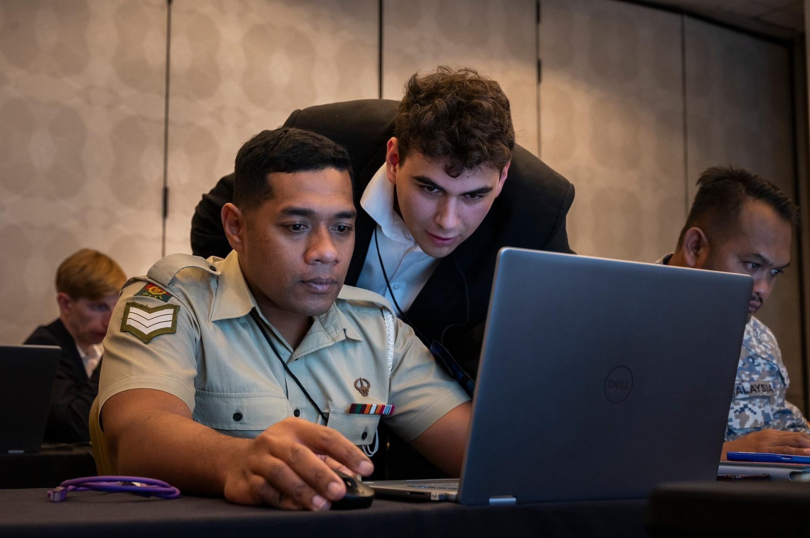
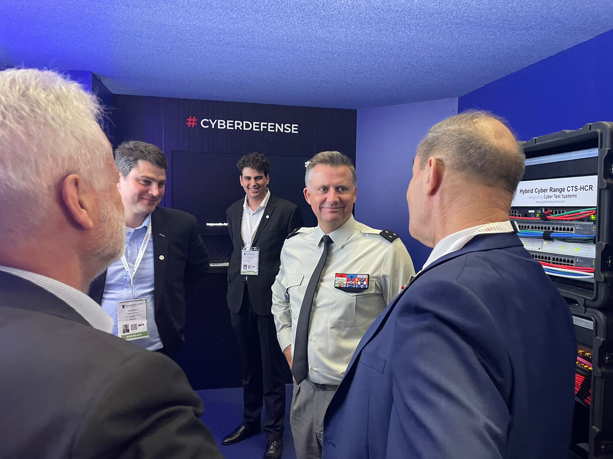

Bonjour, je suis
Lucas Aguetaï
> ▊
Ingénieur en cybersécurité à EPITA, en alternance chez Cyber Test Systems. Passionné par la sécurité offensive, les réseaux et le développement d'outils.
01. À propos
Je m'appelle Lucas, j'ai ans et je suis étudiant-ingénieur en cybersécurité à EPITA, après un BUT informatique à la Sorbonne Paris Nord. Depuis octobre 2022, je suis en alternance chez Cyber Test Systems.
Ce qui me motive : comprendre comment les systèmes fonctionnent — et comment ils cassent. Entre le pentest, l'analyse réseau et le développement d'outils, j'aime autant construire que déconstruire.
while(alive) { learn(); hack(); secure(); }
02. Expérience
Ingénieur cybersécurité @ Cyber Test Systems
Alternance · depuis octobre 2022
$ cat missions.txt
cat: missions.txt: Permission denied — 🔒 confidentiel
Cycle ingénieur cybersécurité @ EPITA
École d'ingénieurs en informatique · Paris
- Sécurité offensive : pentest, techniques d'attaque, reverse engineering, forensics
- Sécurité défensive : développement sécurisé, sécurité Web, normes & gestion de crise cyber
- Cryptologie, IA pour la cybersécurité, réseaux & systèmes
- Gros projets système en C : 42SH (shell complet), kernel
BUT Informatique @ Sorbonne Paris Nord
Université Sorbonne Paris Nord
- Développement, réseaux, systèmes et bases de données
- Début de l'alternance chez Cyber Test Systems en octobre 2022
03. Compétences
Sécurité
- Pentest & audits de sécurité
- Reverse engineering
- Forensics
- Sécurité Web : attaques & défenses
- Cryptographie
- Gestion de crise cyber
Développement
- C — 42SH, kernel
- Python
- Java / C++ / JS
- Assembleur
- Développement sécurisé
- Algorithmique & structures de données
Réseaux & systèmes
- TCP/IP, modèle OSI, LAN
- Linux / Unix
- Systèmes d'exploitation & kernel
- Sécurité Windows
- Virtualisation
- Wireshark, nmap…
04. Projets

📍 Pacific EndeavorPacific Endeavor · Instructeur
Exercice cyber multinational · région Asie-Pacifique
Pacific Endeavor réunit les forces armées et les acteurs de la région Asie-Pacifique autour de la cybersécurité et de l'interopérabilité des communications. J'y ai participé en tant qu'instructeur sur les éditions 2023 et 2024.
- Présentation de plusieurs modules de formation
- Accompagnement pratique de participants internationaux
- Mise en œuvre d'exercices de cybersécurité en conditions réelles

📍 Eurosatory 2024Eurosatory 2024 · Exposant
Salon international de défense et de sécurité
Eurosatory est le plus grand salon international de défense et de sécurité. Avec Cyber Test Systems, j'ai participé au montage du CTS-CTL (Cyber Test Systems Cyber Test Lab) et présenté l'entreprise et le laboratoire sur le stand.
- Participation au montage du CTS-CTL (Cyber Test Lab)
- Présentation de Cyber Test Systems dans sa globalité
- Démonstrations du CTS-CTL aux visiteurs et délégations
42SH · Shell UNIX en C
Un mois pour recoder un terminal complet en C : lexer, parser, exécution, redirections, builtins. Le projet système emblématique d'EPITA.
Projet Kernel · OS from scratch
Refaire un noyau de système d'exploitation à partir de zéro : boot, gestion mémoire, interruptions. Comprendre la machine là où tout commence.
05. Contact
$ ping lucas.aguetai.fr — 0% packet loss, je réponds vite.
Un projet, une opportunité, une question sécu ? Écris-moi.